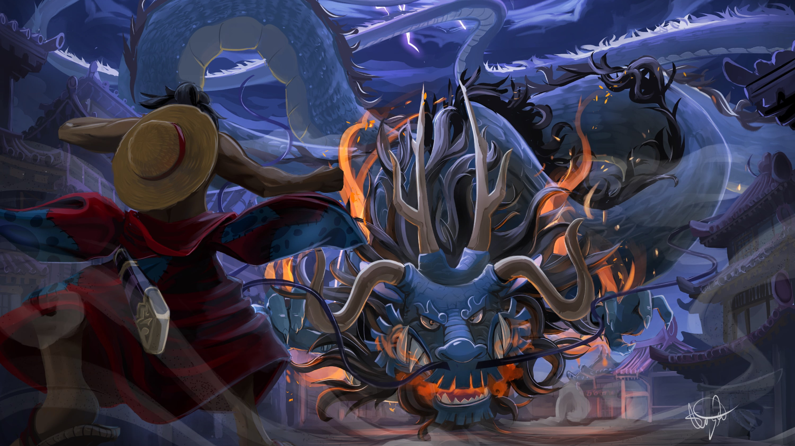

We Are ONE PIECE

One Piece-Watching Guide
This guide will focus on what's worth watching. One Piece has a lot of Movies, Specials, Shorts, etc. I am only adding the most important ones in order to keep the list manageable, so If the item is not listed, then it can be considered to be "Skipped" and it's probably just a commercial, a collaboration, or promotional short.
Watching Guide
-
Sources:
- Watch Episodes 1-45 - East Blue Saga - These Arcs introduce you to One Piece's world & main protagonists. It is a slow start but they are important for the story, so I don't recommend skipping. Includes the following arcs:
- Episodes 1-3 - Romance Dawn / Captain Morgan Arc
- Episodes 4-8 - Orange Town / Buggy the Clown Arc
- Episodes 9-18 - Syrup Village / Captain Kuro Arc
- Episodes 19-30 - Baratie Restaurant / Don Krieg Arc
- Episodes 31-44 - Arlong Park / Nami's Arc - This is the Arc where One Piece really starts to come into its own. You'll have to watch at least to the end of this arc in order to appropriately judge One Piece and to decide if you want to keep watching it or not. It will keep getting better and better from this point on.
- Episode 45 - Loguetown
- Optional Episodes 46-47 - Buggy's Crew Adventure Chronicles
- This is canon, but it's just a comedic side-story. You won't miss anything important if you skip it, although you may want to try the beginning to see if you like it or not.
- Watch Episodes 48-49 - Loguetown (Continuation)
- Optional Filler Episode 50
- This episode is ok, but mostly comedic relief. It shows how Usopp acquire one of his distinctive gadgets and also helps to develop his character, but It's not essential to the main plot.
- Skip Filler Episode 51
This is mostly comedic relief. It also reinforces Sanji's dream and reason to go on the trip, but it's not essential to the main plot.
- Watch Episodes 52-53 - Loguetown (Continuation)
- Optional Filler Episodes 54-61 - Warship Island / Apis Arc
- This is the first filler arc, it's not bad, I personally like it.
- The beginning shows important information about how the seas are connected & how the 'Calm Belts' work, so you may want to watch at least up to that point, although eventually the information will be repeated.
- If you watch this arc, you'll have to remember in the future that any reference to dragons doesn't apply to this arc, as this is just filler material. This is also why this story is never mentioned again.
- Watch Episodes 62-97 - Grand Line - Includes the following arcs:
- Episodes 62-63 - Reverse Mountain / Laboon Arc
- Episodes 64-67 - Whisky Peak
- Episodes 68-69 - Diary of Koby-Meppo
- Episodes 70-77 - Little Garden
- Episodes 78-91 - Drum Island
- Episodes 92-97 - Alabasta (Vivi's Arc)
- Watch Filler Episodes 98-99
- These episodes actually add to the story by showing how the people of Alabasta live and are dealing with the current conditions.
- Watch Episodes 100 - Vivi & Koza's Flashback
- Optional Filler Episode 101 & 102 - I recommend skipping.
- This is a comedic episode of average quality with a family theme. It feels out of place considering the situation they are in.
- Watch Episodes 103-130 - Alabasta (Vivi's Arc) (Continuation)
- Some of the best and most memorable moments of One Piece happens during this part. By now you should be realizing why One Piece it's a masterpiece. It is just amazing that future arcs will be equal or even better than what you have experienced here.